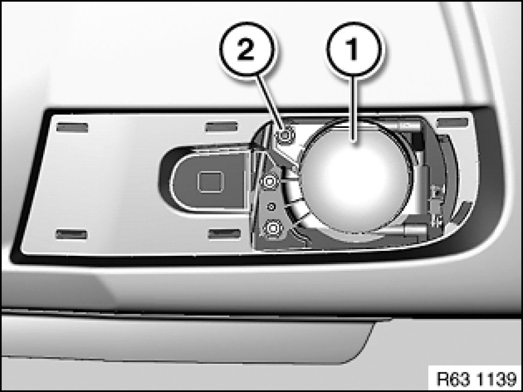
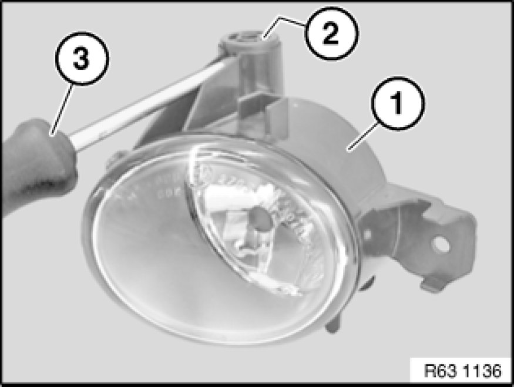

Adjusting Fog Lamp (M Aerodynamic Kit)
63 10 014 - Adjusting fog lamp (M aerodynamic kit)

Note:
Comply with test preconditions for headlight adjustment Test Requirements for Headlight Vertical Aim Adjustment.

Necessary preliminary tasks:
- If necessary, remove fog lamp trim

Build date up to 09/06:
Note:
Fog lamp trim removed for purposes of clarity.
Adjust fog lamp (1) by turning adjusting screw (2) with a suitable tool.

Build date after 09/06:
Note:
Fog lamp (1) removed for purposes of clarity.
Adjust fog lamp (1) by turning adjusting screw (2) with screwdriver (3).